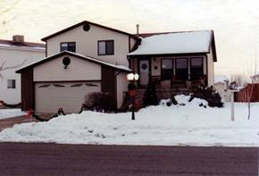
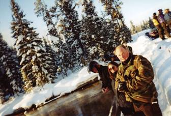
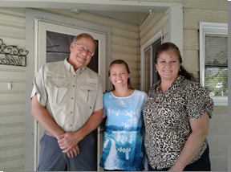

Chapter 38 - OUR HOME IN LAYTON, UTAH AT 778 E 700 S – DEC 1990 TO MAR. 2003
 In November of 1991, we were able to buy our home
here in Layton. It’s a nice home in a young neighborhood & ward. The
families are the ages of our older children and their children. We are
definitely the grandparents, but we love being grandparents - so it’s great.
In November of 1991, we were able to buy our home
here in Layton. It’s a nice home in a young neighborhood & ward. The
families are the ages of our older children and their children. We are
definitely the grandparents, but we love being grandparents - so it’s great.
We enjoy it here, and it has been a good move for Jeff. He found wonderful friends, especially Trent Teeples and later Anna. They helped him become very involved in music, drama and seminary council. Ken and I loved to go watch the plays Jeff were in when he was at Layton High. We took our mothers with us and they enjoyed them too. Jeff was not in Latones, which was a mixed choir, but was in the male choir, Lyrics. I loved to go to the school when they performed or other places during the Christmas holidays as they put on a great Christmas program. They didn’t just stand and sing, they had a choreographer who taught them special dance moves. It was fun to watch them. Jeff was first at Central Davis Jr. High and Scott was at Layton High. Jeff had a friend (can’t remember his name) and we took him with us when Ken, Jeff & I went to visit Shellie, Roy & family in Mesa, Arizona. We stopped at the sand dunes on the way home and he and Jeff had a great time playing on them. We had a little Sprint which Scott drove until he went on his mission and when Jeff turned 16 he drove it. I’ll tell a couple of experiences of him with the sprint. Jeff and his friend were up in East Layton and the friend wanted to drive. Jeff let him and he didn’t make a turn and did some damage to the car. (Ask Jeff if I have this story correct). Another time Jeff & Trent went driving up in the mountains and we got a call late at night that they were stranded. I don’t remember how they got a hold of us as there were no cell phones then. Anyway, Ken called Rodney Stevenson, who was a mechanic and a close neighbor and they drove up and brought the boys home and I think it was the next day that Ken and Rodney went back to get the car with Rodney’s truck. Rodney told Jeff “This isn’t even a place that Jeeps should go, let alone the Sprint.”
Scott made friends here too, although the friends he made, while living with Grandma, are still his good friends and since they all drive and go to Layton High, it’s easy for them to still do things together. Scott learned to swim and dive while living in Arizona so he got on the Layton High Diving team. He is really good, so went to state competition. I love to watch him dive.
Scott had dated several girls in Layton and the surrounding area. The first one he went steady with was Rachel. She was a nice girl, but she liked Scott too much and I was glad when they broke up. He dated another girl and she really worried me as she always wanted to be with him and she would call him all the time and after David returned from his mission and he and Scott shared the basement bedroom, she knocked on their window late one night and told him she had baked him some cookies. I was glad when he started dating Mishelle. After just a few dates with her, they were talking and she told him that she would never marry any boy who hadn’t gone on a mission. Scott decided that maybe other good girls would feel this way, so he made an appointment with the Bishop to see what he needed to do to prepare for his mission. At this time, he was working at Golden Corral in Clearfield. He was hired on as a dishwasher and then they moved him up to a cook. We were excited that he had this good job, but didn’t realize that the manager and others played hard rock music back there and Scott liked it, got hooked on it and started buying those CDs. When we first started hearing him play that music, we were upset. The bishop told him he would need to get rid of those CDs, read the Book of Mormon, etc. He was great! He came home and did get rid of all those hard rock music CDs and did what the bishop asked him to do and did prepare himself for his mission. He continued to date Mishelle and they fell in love and she told him she wanted to wait for him. He told her she could date while he was gone as he didn’t think it was fair for her to stay home, but she wouldn’t date others. She had plenty of chances, but she loved Scott and wanted him.
I would like to insert a spiritual experience I had while living with Ken’s Mom in Layton, and Scott was working at the Golden Corral in Clearfield. Like I said before, Scott got hooked on hard rock music at the Golden Corral as it was played there. He liked this music and bought CDs. I had a hysterectomy and bladder surgery and was home recuperating. Scott and his friends wanted to go to a concert at Park City. He would be driving the Sprint. I wasn’t excited about him going, let alone driving, as many at those concerts were drunk or stoned and would still drive, so I was worried that Scott might be in an accident or have other problems with the people there. I trusted Scott, but I didn’t trust many of those who would be at the concert. Anyway, he went. Ken, his mother and Jeff were asleep and it was late, but I couldn’t sleep because of worrying about Scott and also the discomfort I was in. I began to imagine all sorts of bad things and I had so much anxiety. Finally, I realized I needed to pray sincerely for Scott’s safety. As soon as I asked the Lord to protect him, I had a warm, peaceful feeling come over me, the anxiety and worry left, and I knew Scott was alright. I was so thankful to my Heavenly Father at this time for his love and concern for me, for Scott and all of us. Scott returned home soon after, but he had come close to an accident and as we talked, I shared my concerns and feelings with him and how Heavenly Father had answered my prayers.
Christmas letter 1992
Ken is still at Tooele Army Depot as a lanner/estimator, and I’m going on my third year as secretary at Lincoln Elementary. Ken is in the Sunday School Presidency in our new ward (they just split our ward) and they put me in as Relief Society President – so needless to say we don’t have much spare time – at least I don’t. Ken says his position is the easiest he has had. We enjoy our home, new ward, and especially our family.
Sandy, Dave and he girls- JaNae (age 13) and Chelci (age 6) live in Grantsville. Dave is a manager at the Salt plant in Lake Point and Sandi works at Grantsville Elementary as a lunch clerk. She also has a clogging school, and Dave does taxidermy, trapping, sports volunteer ambulance, etc., o- so the two of them keep really busy. JaNae is excited to be a teenager, as of the 23rd of November. Both her and Chelci excel in clogging and enjoy school. JaNae loves cheerleading also.
Shellie, Roy and Garrett are still in Mesa, Arizona. Roy is employed by Clark Brothers and works at Motorola. He does drafting on the computer and really enjoys it. Shellie is a Mom, homemaker, and a counselor in the Young Women’s organization at church, so keeps busy. Roy is in the Sunday School Presidency. They’re also expecting another baby in February. Garrett is a happy 3-year-old. We’d be happier if we had them closer.
Mike, Becky and little David live in Prove where both Mike and Becky attend BYU and work part-time jobs. Becky graduates this month, so we’re happy for her. Little David will be a year old on the 12th. He’s sure cute little guy, but is a handful. Mike is in the Sunday School Presidency in his ward and Becky is in Relief Society. Ken, Mike and Roy can talk about the Sunday School and compare how each ward is doing, since they all have the same positions.
David got home from his mission (Brussels, Belgium, which includes France) the middle of March. He has been going to Weber University, but is now working for Sanders Brine Shrimp Company, out on the Great Salt Lake. He and Mike have worked the harvest season for several years now, except when they’ve been on their missions. It gives them the money for college. Scott is also working this season, but he’s in the plant in Riverdale. David teaches the mission preparation class in the young adult ward, and enjoys that.
Scott graduated from Layton High last June, and since that time has worked at a couple of different jobs. He is now at Sanders and spends a lot of his spare time with his friends and girlfriend, Mishelle Dillingham. He turns 19 the end of January, so is preparing for his mission. This is the only picture we have of Scott’s graduation. I wanted to take pictures of Scott before the graduation began because they have to turn in their caps and gowns right after the graduation. It didn’t work out to get picture before, so I’m thankful I have this one of him receiving his diploma. The graduation exercises were held out on the football field of Layton High and those attending had to sit on the bleachers. Scott graduated with his good friends – Phil, Layne, Rory and Matt and especially his girlfriend, Mishelle. The school held an all-night graduation party afterwards or the graduates.
Jeff is in the 9th grade at Central Junior High in Layton. He has some great friends and really enjoys this school.
David returned from his mission to France and Belgium and lived here at home and went to Weber State University. I loved having him with us, and enjoyed having him tell me about his classes and what he was learning.
David met Shauna Howard in one of his classes. They dated off and on for a while and he was also dating other girls. A funny incident happened when he took Shauna Howard to a stake dance. We were at that dance and David introduced her to us. I thought then what a beautiful and sweet girl she was. The funny thing was that he introduced her as Shauna Jones (another girl he was going with). Shauna didn’t think too much about it, she just thought it was a slip of the tongue, but when he introduced her to Georgia & Rick as Shauna Jones, she knew he must be dating another Shauna – Shauna Jones. They had a talk about it later. He hadn’t dated either for a while as he was busy with his studies, but a special event came up and he wanted to go, but needed a date. He asked me about it and I said: “Why don’t you take Shauna Howard, she’s a beautiful and sweet girl.” He called and she accepted. They started dating steadily after that. He decided to go into the medical field. He lived with us two years until he and Shauna got married. I enjoyed having him come home and tell me about the things he learned at college and the experiences he had. Shauna is another beautiful daughter-in-law and we are very thankful for her. She is a great addition to our family. They were married in the Manti Temple. They are living in Clearfield. Shauna graduated from college and is a nurse (RN) at Lakeview Hospital in Centerville. David is working part-time at the FHP clinic in Ogden and going to school full time. He plans to become a physician’s assistant.
Scott received his mission call to Venezuela. We love getting letters and pictures from our missionary son. His cousin, Bryan is on his mission to Russia and he wrote Scott saying: “I’m glad I am here on my mission as I couldn’t take the “heat” where you are.” Scott wrote back: I’m glad I’m here on my mission as I couldn’t take the “cold” where you are.” Mishelle wrote to Scott and would come to our home each Sunday to have dinner with us and then play games. Jeff played the piano beautifully and Mishelle played beautifully also, so they had fun on the piano. We enjoyed having her come and hoped she would wait for Scott. A few weeks before Scott returned from his mission, we noticed that Mishelle had a terrible cough each Sunday when she would come to visit. We asked her about it and she said that she has been to the doctor several times, but he just keeps giving her antibodies, but they don’t seem to be helping. I told her she should go to a specialist as her cold and cough sounded awful. Her mother took her to a specialist and they determined that she had Hodgkin’s Cancer and it was in the 4th stage. We were all very worried. She had to be on Chemo for 8 months so they had to postpone their wedding date. She needed Scott at this time so he put off his education and was with her at all her Chemo treatments. Jackie, Mishelle’s mother, talked to me and asked: “Scott won’t leave her, will he. I don’t know if she would have the desire to live, if he should leave her because she has cancer.” I told her “No, Scott loves her and isn’t that type of a person.”
.
Scott and Mishelle were married soon after she finished her Chemo. They were married in the Salt Lake Temple. The doctor warned them not to try to have a baby right away. Scott had to work full time in order to have medical insurance for Mishelle and himself, plus he went to school full time at Weber. I don’t know how he did it, but he did and we are proud of him. Mishelle is a good wife and loves and supports him.
.Island Park – Rich & Lois. They bought a time share condo there and invited us to come and share it with them the last week in January or first week in February for several years. They had snowmobiles and we would ride double and ride through beautiful white meadows, up and down the sides of the old railroad track, go to Big Springs and watch the trout, Moose, Elk, Geese, etc. It is beautiful there. Ken & Rich would go to Lion Head, but it was too dangerous for Lois & I. We would ride up past the continental divide and go up on top of a mountain called “Two Top” where the wind and snow had made beautiful formations on the trees. It was so beautiful and you could see all over. I was nervous going up and back down, however. The last time we did this, Rich & Lois didn’t go with us so both Ken and I had our own snowmobiles. The snow and wind had made deep hills and gullies and it was so frightening (at least for me). Ken kept waving for me to come up, but I finally went up one so steep that it flipped me and the snowmobile over and down we came and landed by a pine tree. If I had hit the pine tree, I could have been seriously hurt. The snowmobile was buried and Ken and some other riders got the snowmobile out. I wouldn’t go up any further and I was really frightened to go back down – but I made it. Other times, all of us went in their motor home to Yellowstone Park, then unloaded the snowmobiles and road the snowmobiles through the Park. It was really cold, but we dressed warm in snowmobile suits and helmets and would stop at the “warming shacks” to get warm, drink hot chocolate and eat our lunch. It was so beautiful. We saw lots of buffalo, Elk, Fox, Geese, Swans, etc. We also run into a herd of buffalo a couple of times. You would pass other riders, as many like to snowmobile there. There is a clubhouse close to the condo where we would go and sit in hot tubes, swim, play ping pong, etc. Lois & I would help each other cook meals & clean. We would read, visit, play games, especially “Mormon Bridge” as that is Rich’s favorite. We would also watch videos, etc., when not snowmobiling.
 We love Rich & Lois and always enjoy being with them. We would pay half the expenses when we went. We always had a great time and looked forward to going. David & Shauna came one year for a few days. They rented a snowmobile, so we three couples could go. Also some friends, Billie & Maggie Klass came one year. They had their own snowmobiles & stayed in a motel close by, but went riding with us. Sometimes some of Rich & Lois’s children would come up for a day or so. Elise was with us a couple of years. Rich and Lois are such good, righteous, humble people. We have always looked up to them as they have always been a great example to us. It is now 2013 and Rich passed away a year ago. He had Alzheimer disease and also cancer. He had gone through cancer before and now it was back. Lois misses him, but she is doing good and Elise has bought the home so they are together and get along great! When Lois dies, Elise will still live there. Elise is a secretary at the college there in Pocatello.
APRIL 25, 1996
I shall attempt to catch up my life history. It has been several years since I have written.
Our Country Creek Ward was divided and they made the Country View Ward, which put our home in that new ward. Bishop Rudd was the Bishop of the Country Creek Ward and had been since our family bought our home there. A family had just bought a home in our neighborhood, but their stay was supposed to be only temporary while they built their new home in Fruit Heights. They were a steward, faithful family, so he was called to be our new bishop. When he was sustained as Bishop, he spoke and told the ward members that if they were called to positions, they shouldn’t decline saying that it wasn’t a convenient time as it surely wasn’t a convenient time for him. He wanted to spend most of his spare time overseeing the building of his home and with being called to be Bishop, he wouldn’t have much spare time. Well, he called me in and asked me to be the Relief Society President. When he asked if I would accept the calling, I told him “How can I refuse after you gave your talk.” I fasted and prayed about my counselors and secretary and the Lord did bless me with a wonderful presidency. My first counselor was Jolynn Stevenson and she was great – so dependable, had great ideas and was always there to do her part and go visiting the sisters with me. She was energetic and enthusiastic. My other counselor, secretary and teachers were wonderful too. When I asked to be released due to not having enough time to fulfill my calling like I needed to, as I was having to help my mom and Ken’s mom lots more because of their age and health, our son, David, was going to be married so I had things to do for that, and I was still working full time at Davis School District and it was a stressful job, especially at this time. When I told my counselors that I was going to be released, they were disappointed as they had enjoyed serving with me and as a presidency. Jolynn was expecting their last baby and when the baby was born, her and Rodney named her Libby Mae. She gave her the name of “Mae” after me. I was honored to have them do that, and Libby Mae has always been close to me. Jolynn would make a special effort to invite me to special occasions for Libby, or to stop over, call, etc. She, Rodney and Libby Mae just stopped in to see me on Monday (July 3, 2017 – just rewriting and adding to this history) to let me know that Libby Mae was leaving for her mission to the state of Washington the following day. She had lost our phone number, so hadn’t been able to let me know that she was speaking in church prior to leaving on her mission. We had a good visit and several hugs.

As of this date, 1996, I am the Stake Homemaking Counselor in the Stake Relief Society Presidency. I have been serving in this position for about two years and I am enjoying this calling. I serve with wonderful sisters. Marge Beardall is the president. She is a widow. Her husband died of leukemia while serving as Stake President in California. He left her well off and she had a good feeling about selling and moving to Utah. She has a beautiful home in the Summerhaze Ward. She has two married children and one son who attends college and doesn’t live at home. Claudia Thompson is the Education counselor. I knew her from when I was the secretary at Lincoln Elementary. Claudia teaches 2nd grade there. She is an excellent teacher and a wonderful person. Jola Craven is the secretary and she is also our neighbor. She just lives three houses down from us. Her husband, Brent, is our home teacher and also serves as a High Councilman with Ken. He is a seminary teacher. His father is a general authority. They are a special family and a good example to everyone in the ward and elsewhere. I enjoy serving and helping the ward Homemaking Counselors. (Marge is in the red, in the picture, Claudia is next to me in the black and Jola is next to Marge)
June 10, 1996
At this time, I would like to summarize the past proceedings of the last six weeks. On April 13th, Ken and I drove down to Chandler, Arizona to be with Shellie, Roy and their family since Shellie had her baby on the 12th. We enjoyed the trip down and back and really enjoyed being with the family and taking care of little “Kevis” and Shellie. While we were there, we went with Roy & Garrett to two of Garrett’s “T” ball games. It was fun watching him play ball. It doesn’t seem that long ago that we were watching our own sons play ball. We came home and were busy with sending out wedding invitations for Scott & Mishelle’s wedding which was on June 1st. Sandi, Shauna and I gave Mishelle a bridal shower, for the family, on the 16th at our home. It turned out really nice and she was excited.
Tuesday night, the 21st, Ken and I went out to Tooele to watch Chelci play softball. She plays 1st base and is really good. I had called JaNae to see if she could come to the game also so we could see her. She did, but so did her dad, which made it a little uncomfortable since Terry met Sandi there. Dave stayed out by the edge of the field, but we felt we should go speak to him since he had been our son-in-law for 16 years and since JaNae was living with him and we wanted to keep relations good because of her. Ken went over and talked with him. I think I would have enjoyed it more, had Dave not come this time. Sandi said he had only been to one other game, and she was sure he came this time just because we were coming. It was Chelci’s birthday the next day so we took her birthday present out to her this night. We got her a journal and some black Levi’s. She opened it and was excited, especially with the journal as she had wanted one.
Jeff graduated from seminary on the 22nd. It was held at the Stake Regional Center in Bountiful. We took Ken’s mom and my mom with us. It was really nice and we were very proud of Jeff. He also sang in the seminary choir which sang during the program. Trent, Jeff’s best friend, is the president of the seminary council and Jeff was over scripture mastery on the council. Trent spoke and gave an outstanding talk. We were very impressed, but Trent is an outstanding young man as also Jeff is. We went to get ice cream after. Jeff had ridden his motorcycle. He had to be there early and even though there was another vehicle for him to take, he decided to ride the motorcycle. As we were coming home, it started to rain, it rained really hard and so I was really worried about Jeff. Upon arriving home, after taking our mother’s home, Jeff’s motorcycle was there and I was really relieved. Upon entering the house, Jeff came out of the bathroom after having taken a hot shower. He said it wasn’t a good experience, to say the least, but he thought, while he was driving through the pouring rain and he was getting soaked and freezing and the roads were terrible to drive on – that he was thankful for a good helmet so he could see and keep his head warm, for leather gloves to keep his hands warmer, for a leather jacket to keep him warmer than he would have been, and for a motorcycle and not a horse or covered wagon like the pioneers had. He was also grateful for a warm home to come to and a hot shower to be in and dry clothes to put on. *I thought – Wow! What a special son we have, to not complain, but to realize his blessings and thank the Lord for them. I’m not so sure I would have thought those things.
I had Stake Relief Society Leadership Meeting on May 23rd and I had been so busy with everything else, I hadn’t had as much time as I would have liked to prepare, but it was a little different, thank goodness. We held it at Marge’s home, had a luncheon and at my table (Homemaking counselors), we just shared homemaking meeting ideas, board meeting ideas, etc. I had sent them a letter asking that they come prepared to share these ideas. I put together some ideas and other materials to give to them. (I did a lot of this at work during my lunch hours since I didn’t have it at home.) It went really well, and all but two of the wards were represented. One had to leave town to take care of a new grandchild and the other was ill.
On the 24th, we went to the high school to watch Jeff perform in the Extravanza which the LaTones, Lerics & Lace present at the end of the year. Jeff is in the Lerics. It was wonderful and I especially liked watching Jeff as he is dramic and a very good dancer as well as singer. Not that I’m prejudiced, of course. They dance as they sing on many of the numbers. We took the grandmothers and Aunt Vida. Scott & Mishelle went also.
We went on the 29th with Scott & Mishelle and her family to the Bountiful Temple for Mishelle to take out her endowments. It was wonderful to be there. We saw some old friends, Wayne & Carol Hickenlooper there. They have a son who was getting his endowments prior to going on a mission.
 Jeff’s graduation from
Layton High School was the following night, May 30th at the high
school. It was in the gym and we had to sit on the bleachers so we didn’t take
the grandmothers. We could only have 3 or 4 tickets anyway. Scott wanted to
go, but Mishelle needed his help with things she had to do for the wedding. It
was a wonderful graduation, but we were tired and our backs hurting by the time
the last of the seniors received their diplomas. We went with Jeff to the
Country Club where we ate a delicious dinner. Trent’s parents paid for our
tickets since when they asked Trent what he wanted for graduation, he said to
have his two bet friends with him – Jeff and Anna and their parents to sit at
the same table with him and his parents at the graduation dinner. We had a
good time. Jeff, Trent, and Anna and most of the seniors went to the Senior
Bash afterwards where they spent the entire night at the high school having
wonderful activities. They had a great tie. Lori, Trent’s mom, was in charge
of the dinner and the senior bash. (Picture with Jeff and his best friends –
Trent & Anna. Trent & Anna got married soon after Trent returned home
from his mission. It is 2017 and they still get together – Jeff & Gail and
Trent & Anna. They get together sometimes with their families and
sometimes just the four of them. It’s great to have such good friends.
Jeff’s graduation from
Layton High School was the following night, May 30th at the high
school. It was in the gym and we had to sit on the bleachers so we didn’t take
the grandmothers. We could only have 3 or 4 tickets anyway. Scott wanted to
go, but Mishelle needed his help with things she had to do for the wedding. It
was a wonderful graduation, but we were tired and our backs hurting by the time
the last of the seniors received their diplomas. We went with Jeff to the
Country Club where we ate a delicious dinner. Trent’s parents paid for our
tickets since when they asked Trent what he wanted for graduation, he said to
have his two bet friends with him – Jeff and Anna and their parents to sit at
the same table with him and his parents at the graduation dinner. We had a
good time. Jeff, Trent, and Anna and most of the seniors went to the Senior
Bash afterwards where they spent the entire night at the high school having
wonderful activities. They had a great tie. Lori, Trent’s mom, was in charge
of the dinner and the senior bash. (Picture with Jeff and his best friends –
Trent & Anna. Trent & Anna got married soon after Trent returned home
from his mission. It is 2017 and they still get together – Jeff & Gail and
Trent & Anna. They get together sometimes with their families and
sometimes just the four of them. It’s great to have such good friends.
On the 31st, we had a family dinner since Shellie and her family had come in late Thursday night and Mike and his family had come up on Wednesday (they were staying with her family in Provo.) It was to celebrate Jeff’s graduation and Scott’s wedding and since we could all be together. We cooked a turkey and had the trimmings. We visited and played games afterwards. Sandi and her girls came also. Candace, our neighbor, went on a trip so let us use her home again, so Sandi and the girls slept there plus Scott & Jeff. Mike & Becky slept in Jeff’s room with David & Taylor on the hide-a-bed in the family room. Shellie, Roy & baby slept in Scott’s room with Garrett & Quint in a make-shift bed on the floor in the computer room. It was great being together again.
Saturday morning, June 1st, we were up early getting ready to go to the temple. Scott went to pick up Mishelle and they went together. Ken & I drove alone because we had to be there early with Scott. We hired Mindy Craven to tend Garrett & Quint, David & Taylor while Shellie & Roy and Mike & Becky went to the temple. Sandi offered to go early with Shellie & Roy to tend the baby in the lobby of the temple while Shellie & Roy were at the wedding. I was so thrilled that Sandi offered to do this. It has been so hard for Sandi when her sister and brothers got married in the temple, because of her life, that she didn’t even go to Shellie’s wedding breakfast, let alone the temple grounds for pictures, and didn’t go to the temple for pictures at either Mike or David’s wedding. This is a big step for Sandi and all of us were excited that she would be there. Jeff took JaNae and Chelci with him to be there for pictures. He later told me that it was very hard for him to be there. He felt all alone. The last of his brothers & sisters had been married and now he was alone in the family. JaNae & Chelci were there, but he still felt alone and had a hard time. He left right after the family pictures and went driving around. I guess it’s pretty hard for the last child. I never felt that as I was the first child to leave home to get married, in my family.
Anyway, Scott & Mishelle’s marriage was wonderful. The sealer was a wonderful man and gave special advice to them. Scott & Mishelle looked so happy and it brought tears to my eyes to think of the past year – how hard it has been with her having cancer and going through chemotherapy together. Scott was with her each time, since he worked 4 ten-hour days and had Fridays off. I’ve had many, many people tell me what a special young man he is to take on such a responsibility – to stand by her even though they weren’t engaged when she found out she had cancer. But he loved her and wanted her for his eternal companion.
It was a beautiful day and the pictures turned out great. We went to the wedding breakfast at the Red Flame in Bountiful. The food was wonderful and we had a grand tie. It cost over $600.00, but it was worth it. It cost $8.50 per person and that included the tax and tip. We had chicken breasts, baked potatoes, drink, desert and salad bar. Everyone enjoyed it.
We had family pictures taken at Olan Mills studio in Layton, since David couldn’t be to the reception that night where pictures would be taken. He was receiving an award at Weber University and, of course, needed to be there. Ken and I went to look at the proofs two weeks later and they were wonderful. We are so thankful for our beautiful and wonderful family. We have such good children and they chose wonderful companions, and our grandchildren are the best. We are so fortunate, and I am so happy.
We all love Mishelle and are thankful for her and how she went through so much pain, sickness, anxiety, etc. She tried to be positive and have faith that she would get well – and she has. We grew to love Mishelle more and more as her and Scott dated and then after he left on is mission, we invited her over each Sunday for dinner ad to spend the evening. We would play games or watch church videos or just visit. Most of the time we invited Ken’s mom or my mom, or both plus David & Shauna or any family members so we enjoyed the evenings. Jeff enjoyed having Mishelle there too and the two of them would play the piano together some evenings.
The next day, Sunday, Shellie, Roy & family headed back home to Arizona. They left about the time we were going to church for Sacrament Meeting. It was hard to see them leave, sure wish they lived closer. We miss out on so much of their children’s lives. I hope someday we can live close by each other.
After meetings, Ken & I left for Montana with Mike. We took our good car as it is cheaper to drive than Mike’s truck. We went with him to help him finish packing up the house and clean it as they are moving down, and we are excited about that. Becky and the two children stayed in Provo with her parents. It was a wonderful trip. The scenery was so beautiful. I had never been up that way and I loved it. I had taken books & Ensigns to read (which I usually do on trips – I read out loud to Ken), but it was so beautiful and nice to just visit with Mike and Ken and enjoy the scenery. We arrived in Inverness that evening and went to bed. The next day we started packing when the guy came with his moving truck to move Mike. We hadn’t expected him until the following day. He said he got through early from his last moving job and decided to come and see if we were ready. We hurried to finish packing which he and his son packed the truck. I then started cleaning. It wasn’t bad as Becky is a good housekeeper. After we were finished and the truck had left, Mike showed us around Inverness and we saw the High School and Elementary School where he taught at and coached. It’s a cute little town. We met his good neighbor and others in the neighborhood. We had a good time. Because we didn’t have a bed to sleep in that night, we decided to go part way and sleep in a motel. We did, but none of us slept much. Ken and I didn’t sleep because the bed was so hard and Mike didn’t sleep because when Ken did sleep, he snored too loud. We started out tired the next morning, but still had a good trip. The scenery was beautiful and it was relaxing for me to just enjoy the scenery and again visit with Mike & Ken. We took Mike to his home in Provo. His father-in-law helped Mike & Becky get into it. It is an older home, but very nice and has a nice yard with lots of shrubbery and trees.
This summer has gone by really fast. With going to Arizona in April to help out when Kevis was born, Scott’s wedding and helping Mike move down from Montana, we didn’t feel we had the time or money to go on other vacations, but we did get together up to Camperworld a couple of times. Once with the family at Coleville and once, just Ken & I at Woodland up by Heber. (Scott & Mishelle came up on Friday afternoon and stayed the night with us.) We took Irven’s 4-wheeler and had a great time in the mountains with it. Ken & I just relaxed and had a great week. Ken went fishing part of the time while I worked on scrapbooks. It was so quiet and beautiful up there. We also have the children and their families to our home for Sunday dinners quite regularly. Scott & Mishelle and David & Shauna come almost every other week as they live close by, ad Sandi ad her girls and Mike, Becky and their family come as often as they ca. We really enjoy having our family with us. They are great kids, have married great spouses and have wonderful children. We just wish Shellie, Roy & family lived close by so they could be with us also. They were here in June for Scott & Mishelle’s wedding, but we only get to see them two or three times a year.
David graduated from Weber University and he graduated with honors. We are proud of him. He worked hard for it and got straight A’s.
Ken’s younger brother, Irven, wife, Sandy, and their family moved to Arizona from Washington. A friend introduced him to a dream that was going to make them rich, but it worked out for them like it did for us when we went down there the last time. It didn’t work out, and they had a rough time financially, like we did. Since Mom Jensen let us live with her for a while, we decided we should return the favor to Irven & his family – so Irven, Sandy and their family moved in with us the first of August. It has worked out really well for the most part. Since Scott had moved out, we had an extra bedroom so Irven & Sandy took that, and we moved our computer into our bedroom, turning the computer and exercise room into a bedroom for Mark. Actually, Christine & Jennifer stayed in that room until they left for college in September. We are adding an extra bathroom in the basement so we have the extra needed shower. I think it would be really hard to do this with most couples, but we really enjoy Irven & Sandy. Sandy and I have always gotten along really well. We giggle like young girls. Her & I share the housecleaning and we take turns every other week buying the groceries and fixing the meals. That is wonderful to be able to do that, and whoever is cooking, their husband & family help with the dishes and cleanup. This leaves the other family time to do other things the week they aren’t cooking – which is great! Mark is a sweet kid and he was no problem. Jeff must have been on his mission at this time. Well, fast forward, and it did get harder. The one thing for me was that with them here, our children and families didn’t feel like there was room for them to come visit, come for Sunday dinners, etc. Christmas was good, but harder. Some of our children did come and so did their children, except Doug, who was married and living in Arizona. We were crowded together in our family room to open gifts. It was a different Christmas, but their children are great, so it was okay. After they had been there for nine months, Irven talked to Ken and said “This is working out great, so we should make it permanent. With sharing expenses, it is easier financially on all of us.” Irven had been getting on Ken’s nerves and this didn’t set well with him, he was ready to have them go, so he said “Irven, if I wanted to live with you, I would have married you.” That is a crazy thing to say, but Irven got the message and he and Sandy started looking for another home. There were some difficult feelings at first, but when they found a home in Clearfield and moved in, they were fine and it was better for all of us.
For October conference, our family got together. We had been together the previous Sunday for dinner and decided we needed to go up the canyon once more together before the bad weather set in, so we met at our home on Saturday, the 5th, at noon and went up Farmington Canyon. We had taken fried chicken, salads, Sandi’s good rolls and desert. We ate, went for walks (I enjoyed going around with little David. He would say “come on Grandma, let’s go take this shortcut.”) We listed to the afternoon session of conference on the radio in Mike’s truck. Ken took a nap in Mike’s truck also. It was a nice day. Mike, Becky & family, Sandi and Chelci stayed over and slept in the tent trailer. Sunday morning, Ken fixed biscuits and gravy for breakfast and David & Shauna and Scott & Mishelle came over. After breakfast, some of them had to leave and the rest of us watched conference. We invited Mom Jensen and Aunt Vida over for supper and to watch the afternoon session of conference. Conference was sure wonderful.
After quitting working at the Bountiful Mall, Ken worked for Dwaine Mattison, my cousin Eve’s husband. Dwaine hired Ken to work with him to build homes. It didn’t work well for Ken, as it was always a “Dwaine Deal”.
Ken bought a used ambulance and converted it to his work van. When he first brought it home, the neighbors called thinking the ambulance was there for one of our family. Ken took off the flashing lights, etc. We took a fun vacation in it, to Shellie & Roy’s home in Arizona. We took Jeff and his girlfriend, Nicki, and Sandi and her girls with us. While on this trip, Scott called to tell Jeff that his mission call had come. This was great as many of us were together and Jeff didn’t want to wait until we got home to open it, so he had Scott open it and read it to us. It stated that he would be going to the Mexico City Mission. I think he was a little disappointed at that because he had a prejudice toward Mexicans. It turned out to not be the greatest mission for him. Not sure why he was called there unless the Lord wanted him to love everyone, including the Mexican people. He did love some of the people, but he had native companions and he was the zone leader and his companion and other missionaries were Mexican and didn’t obey mission rules. He told the mission president, but he was native also and just told Jeff that he couldn’t send them home as it would not only ruin their lives, but their families as well. We were sad when Jeff told us this after he had returned home, as the mission president should have done something about this problem. It was a hard mission for him.
Dwaine wanted to buy the ambulance/work van from Ken, and Ken did end up selling it to him.
Ken worked for another construction company after he left Dwaine, and then retired when he turned 62.
Jackie Thompson, my former boss at Davis School District is now the director of a new Equity Department now. She called and asked if I would be willing to come out of retirement and be her secretary. This was after we came home from our mission. Ken didn’t want me to and I didn’t want to either, even though I would have enjoyed working with her and we could use the money, I wanted to be able to enjoy our grandchildren and families more, do more family history and temple work and enjoy life, so I declined. She understood and hired Patty Woodward. Patty had left the Planning Dept and was hired in Staff Development to take Billie’s place after she retired.
I haven’t called Jackie since we moved to Roy as Ken can’t drive school busses anymore, so we don’t have extra money for gas and lunch, but I did call her on April 20, 2017 and we will do it again before she retires in July.
Sandy always gave me wonderful reviews each year and she nominated me to receive the secretary of the year award again, this time as her secretary of Staff Development in 1998. The superintendent presented these awards at the school board meeting. He said some nice things about me and then presented me with a plaque which read: “Davis County Schools Board Honors to Mae Browning, Staff Development Secretary for dedicated and outstanding service for children in Davis County Schools. Presented October 6, 1998. It was signed by Dr. Darrell K. White, Superintendent of Schools and Barbara A Smith, President of the Board of Education.
Elizabeth, the secretary at the Computer Dept, took my job. I knew Elizabeth and knew she wanted to come to Staff Development, and I knew she would be so good, so I was happy when she got the job. She wasn’t hard to train.
I was able to retire in January 2003, just prior to Ken and I going on our mission to the Philippines. Sandy and my assistants planned a retirement open house for me. They went all out and it was really nice. They sent invitations out to all the schools and district offices and to our family. Most of our children and grandchildren were there and many of my friends from the schools and district office. Sandy and my assistants gave me a beautiful corsage to wear. The school catering dept catered the food and it was really nice. Nancy Fleming the assistant superintendent over Staff Development made a speech and presented me with a beautiful gold bell. Sandy made a speech and gave me gifts. They had me say a few words. I received many cards and gifts. I was afraid that not many would attend and I had kind of wanted to not have an open house, but just slip quietly away – maybe do a lunch with the ladies in our dept., but that didn’t happen, however, my former boss, Claudia Seeley, gave me a going away party at her home in Salt Lake and invited our Staff Development Dept - Sandy, Marilyn, Betty, Jackie, Billie, Linda and myself. Claudia had a nice lunch for us and they all went in on a gift for me. It was a Christmas Angel. We had a great time. My other secretary friends also took me out to lunch one day before I left. (This isn’t a good picture; the original is in my occupational scrap book).